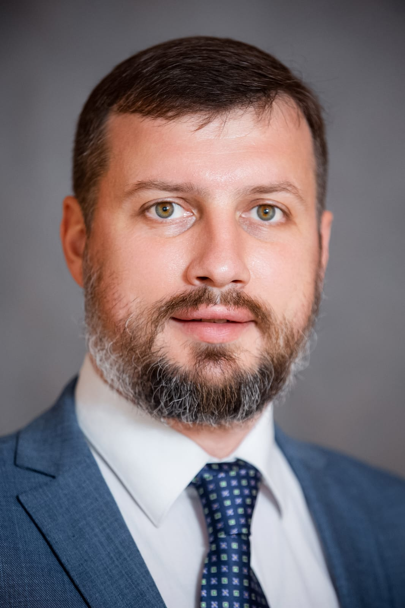

Салиба
Максим Бошрович
Saliba
Maxim Boshrovich
Хирург высшей категории, кандидат медицинских наук, доцент Сеченовского Университета. Board-certified surgeon, MD, PhD, Associate Professor at Sechenov University.
Экспертная хирургическая помощь: от бережных амбулаторных манипуляций до сложных высокотехнологичных операций на щитовидной железе и органах брюшной полости. Expert surgical care: from delicate outpatient procedures to complex high-tech surgeries on the thyroid gland and abdominal organs.

Опыт, доверие и научный подход Experience, Trust, and Scientific Approach
«Мой путь в медицине начался в стенах Сеченовского Университета, где я прошел все ступени — от студента до доцента кафедры факультетской хирургии. Для меня хирургия — это сочетание проверенных академических стандартов, бережного отношения к тканям пациента и внедрения передовых малоинвазивных технологий. "My medical journey began within the walls of Sechenov University, where I progressed through every stage — from a student to an associate professor of the department of faculty surgery. For me, surgery is a combination of proven academic standards, delicate handling of patient tissues, and the implementation of advanced minimally invasive technologies.
Я убежден, что успешное лечение строится на взаимном доверии между врачом и пациентом. Каждый клинический случай индивидуален, поэтому моя цель — подобрать наиболее щадящую и эффективную методику лечения». I am convinced that successful treatment is built on mutual trust between the doctor and the patient. Every clinical case is unique, so my goal is to select the most gentle and effective treatment method."
Краткая автобиография Brief Autobiography
Первый МГМУ им. И. М. Сеченова Sechenov First Moscow State Medical University
Специальность «Лечебное дело» General Medicine Major
Интернатура и ординатура Internship and Residency
Специальность «Хирургия» на клинической базе академии General Surgery at the Academy's clinical base
Кандидат медицинских наук PhD in Medicine
Защита диссертации по УЗ-диагностике и лечению первичного гиперпаратиреоза Defended thesis on US diagnostics and treatment of primary hyperparathyroidism
Доцент и завуч Associate Professor & Head of Curriculum
Кафедра факультетской хирургии №1 ИКМ им. Н.В. Склифосовского Department of Faculty Surgery No. 1, Sklifosovsky Institute of Clinical Medicine
Специализация и направления лечения Specialization and Fields of Treatment
Эндокринная хирургия Endocrine Surgery
- • Лечение заболеваний щитовидной и околощитовидных желез Treatment of thyroid and parathyroid diseases
- • Оперативное лечение узлового зоба и гиперпаратиреоза Surgical treatment of nodular goiter and hyperparathyroidism
- • Использование щадящих операционных доступов Use of minimally invasive surgical approaches
Абдоминальная хирургия Abdominal Surgery
- • Операции на органах брюшной полости Abdominal cavity surgeries
- • Лапароскопические (малотравматичные) вмешательства Laparoscopic (minimally invasive) procedures
- • Лечение грыж передней брюшной стенки, холецистита Treatment of abdominal wall hernias, cholecystitis
Малоинвазивные методы Minimally Invasive Methods
- • Микроволновая абляция новообразований Microwave ablation (MWA) of tumors
- • Использование современных ультразвуковых методов навигации в процессе операций Use of modern ultrasound-guided navigation during surgeries
Амбулаторная хирургия Outpatient Surgery
- • Прием и консультации пациентов Outpatient consultations and exams
- • Удаление доброкачественных новообразований кожи (липомы, атеромы) Removal of benign skin tumors (lipomas, atheromas)
- • Первичная хирургическая обработка ран, удаление инородных тел Primary wound care, removal of foreign bodies
Наука на службе здоровья Science in Service of Health
Научная деятельность позволяет внедрять в практику методы, которые делают операции более безопасными и сокращают период реабилитации. Scientific activity allows us to introduce methods into practice that make operations safer and reduce the rehabilitation period.
Разработка «Туннелера» "Tunneler" Development
Под руководством М. Б. Салибы был разработан и напечатан на 3D-принтере специальный туннелер, позволяющий выполнять эндоскопические операции на щитовидной железе через полость рта (TOETVA) в два раза быстрее и безопаснее для пациента. Under the scientific guidance of M. B. Saliba, a specialized 3D-printed tunneler was developed, allowing endoscopic thyroid surgeries through the mouth (TOETVA) to be performed twice as fast and safer for the patient.
Термометрия при абляции Thermometry during Ablation
Участие в разработке систем точного контроля температуры при микроволновой абляции околощитовидных желез для предотвращения повреждения окружающих здоровых тканей. Participation in the development of precise temperature control systems during microwave ablation of parathyroid glands to prevent damage to surrounding healthy tissues.
Методика TOETVA TOETVA Technique
Удаление щитовидной железы через преддверие рта. На коже шеи и тела не остается абсолютно никаких шрамов. Высокая точность визуализации и быстрое восстановление пациента. Thyroid removal through the oral vestibule. Absolutely no scars are left on the neck or body skin. High imaging precision and rapid patient recovery.
Наставничество и симуляции Mentorship and Simulations
Подготовка нового поколения врачей в Сеченовском университете с использованием передовых технологий. Training a new generation of doctors at Sechenov University using advanced technologies.
Школа мастерства School of Mastership
В качестве руководителя и наставника в «Школе мастерства» Максим Бошрович привлекает студентов старших курсов к реальной научной и изобретательской деятельности, обучая не только хирургической технике, но и клиническому мышлению. As a mentor and leader in the "School of Mastership", Maxim Boshrovich involves senior students in real scientific and inventive work, teaching them not only surgical techniques but also clinical reasoning.
- ✓ Разбор реальных клинических случаев Analysis of real clinical cases
- ✓ Участие в обходах и операциях Participation in ward rounds and surgeries
- ✓ Первые научные публикации студентов Student research publications
Тканеэквивалентные фантомы Tissue-Equivalent Phantoms
Активное участие во внедрении высокореалистичных органов-фантомов молочной железы (разработка Передовой инженерной школы). Это позволяет ординаторам отрабатывать сложнейшие манипуляции без риска для реальных пациентов. Active participation in implementing highly realistic breast organ-phantoms (developed by the Advanced Engineering School). This allows residents to practice complex procedures without any risk to real patients.
«Это бесценный опыт без риска для пациента» — М. Б. Салиба "This is invaluable experience without risk to the patient" — M. B. Saliba
Гуманитарная и этико-просветительская деятельность Humanitarian and Ethical-Educational Work
Членство в ИППО IPPS Membership
Действительный член Императорского Православного Палестинского Общества (с 2022 года). Участие в организации позволяет вносить вклад в сохранение исторического наследия, развитие гуманитарных миссий и поддержку благотворительных медицинских инициатив. Active member of the Imperial Orthodox Palestine Society (since 2022). Participation in the organization allows contributing to the preservation of historical heritage, the development of humanitarian missions, and supporting medical charity.
Бог и человек в медицине God and Man in Medicine
Спикер просветительских семинаров-дискуссий, посвященных наследию В. Ф. Войно-Ясенецкого (Святителя Луки). Обсуждение границ ответственности врача, психологической поддержки пациентов и преодоления профессионального выгорания через духовные ориентиры. Speaker at educational discussion seminars dedicated to the legacy of V.F. Voino-Yasenetsky (St. Luke). Discussing the boundaries of a physician's responsibility, psychological support for patients, and overcoming professional burnout through spiritual values.
Отзывы пациентов Patient Reviews
Отзывы реальных пациентов, опубликованные на независимых медицинских порталах. Reviews from real patients published on independent medical portals.
"Выражаю искреннюю благодарность Максиму Бошровичу за успешно проведенную операцию на щитовидной железе. Шов практически незаметен, а отношение доктора — исключительно теплое и профессиональное." "I express my sincere gratitude to Maxim Boshrovich for a successfully performed thyroid surgery. The scar is virtually invisible, and the doctor's attitude is exceptionally warm and professional."
"Внимательный, спокойный и очень грамотный специалист. Оперировал пожилого отца (удаление желчного пузыря). Всё прошло без осложнений, доктор постоянно был на связи и подбадривал нас." "An attentive, calm, and highly competent specialist. He operated on my elderly father (gallbladder removal). Everything went without complications, the doctor was constantly in touch and kept our spirits up."
"Врач от Бога! Провел симультанную операцию — одновременно удалил зоб и желчный пузырь. Восстановление прошло быстро, очень благодарна за чуткое отношение и золотые руки." "A doctor from God! He performed a simultaneous surgery — removing a goiter and gallbladder at once. Recovery was fast, and I am very grateful for the caring attitude and golden hands."
Адреса приёма и запись Practice Locations and Appointments
Государственный приём (Москва) Public Clinic Appointments (Moscow)
В рамках ОМС, ДМС или коммерческого приема Covered by CHI, VHI, or out-of-pocket
Частный приём (Московская обл.) Private Clinic Appointments (Moscow Region)
Как подготовиться к приёму? How to Prepare for Your Appointment?
Чтобы консультация прошла максимально продуктивно, на прием желательно принести результаты следующих исследований (если они проводились): To ensure your consultation is as productive as possible, it is advisable to bring the results of the following tests (if they have already been performed):
1 При патологии щитовидной железы: For thyroid pathology:
- Свежее УЗИ щитовидной железы и лимфоузлов шеи (не старше 3 месяцев) Recent ultrasound of the thyroid gland and neck lymph nodes (not older than 3 months)
- Анализы крови: ТТГ, Т4 свободный, кальций общий и ионизированный, фосфор, ПТГ, витамин D Blood tests: TSH, Free T4, total and ionized calcium, phosphorus, PTH, Vitamin D
- Результаты тонкоигольной биопсии (ТАБ), если выполнялась Fine needle aspiration biopsy (FNA) results, if performed
2 При абдоминальной патологии: For abdominal pathology:
- УЗИ органов брюшной полости (желчный пузырь, грыжи) Ultrasound of abdominal organs (gallbladder, hernias)
- Выписки о ранее перенесенных операциях (если они были) Discharge summaries of previous surgeries (if any)